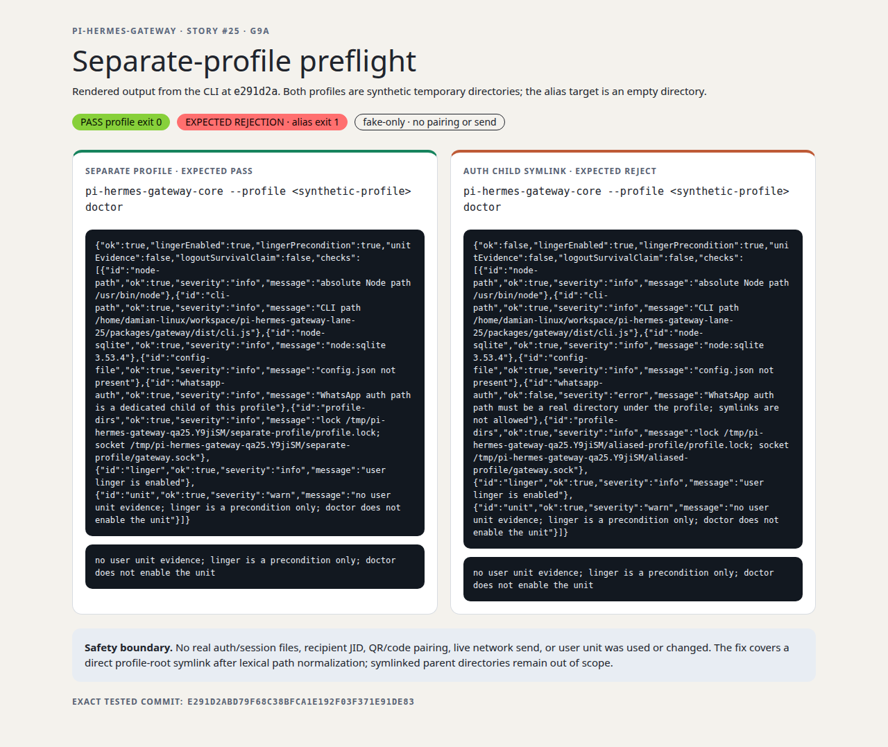

pi-hermes-gateway · story #25 · G9a
Separate-profile preflight
Fresh CLI evidence on exact PR head e291d2abd79f68c38bfca1e192f03f371e91de83. The test profiles were synthetic temporary directories; the symlink target was an empty directory.
PASS — separate profile exit 0
EXPECTED REJECTION — auth-child symlink exit 1
Fake-only · no pairing or send

What this proves
- A real synthetic profile with no config or auth directory passes the WhatsApp preflight.
- A symlink at the fixed
whatsapp-authchild is rejected with an error before any auth/session contents are read. - The regression test also rejects a symlinked profile root supplied with a trailing slash or
/.; the plain-root cases remain covered.
Safety and scope: no real auth/session files, recipient JID, QR/code pairing, live network send, or user unit was used or changed. Lexical normalization protects a direct profile-root alias and the fixed auth child; symlinked parent directories remain outside this story's scope.